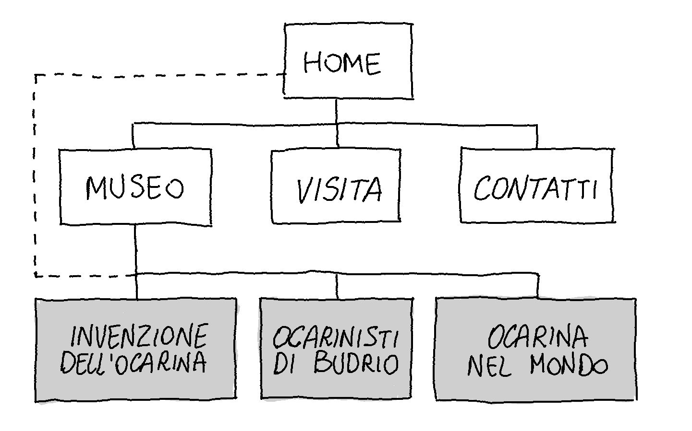
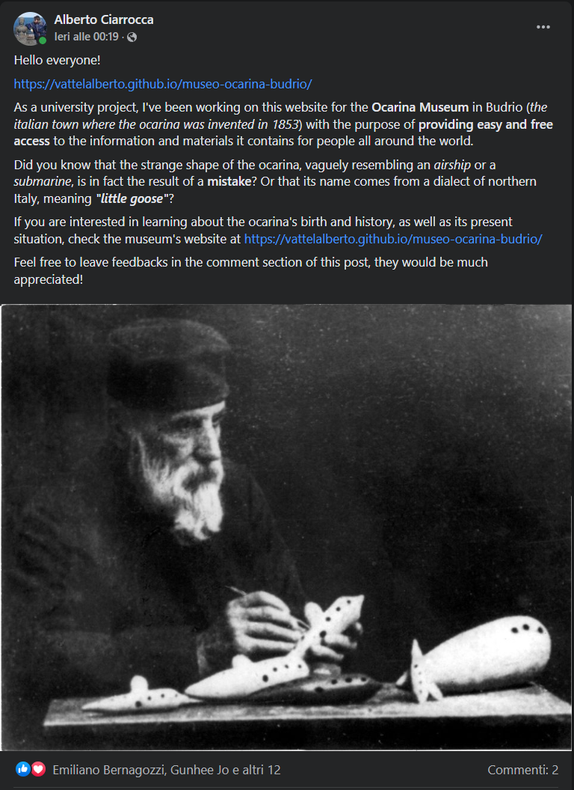

Abstract
Nonostante l’ocarina sia uno strumento musicale legato alla tradizione locale della provincia di Bologna, il suo fascino è sempre riuscito a catturare l’interesse di appassionati in tutto il mondo: questo sito si propone di presentare online i contenuti del Museo dell’ocarina e degli strumenti musicali in terracotta “Franco Ferri” di Budrio, in una forma quanto più possibile intuitiva e accessibile, con particolare attenzione al pubblico estero.
Per non escludere il pubblico di non appassionati che potrebbero essere incuriositi dall’argomento, ho tentato di dare al sito un’aria accattivante pur mantenendo una certa sobrietà.
Project Management Plan
Benchmarking
1. Obiettivi
Creazione di un sito dedicato al Museo dell’ocarina e degli strumenti musicali in terracotta “Franco Ferri” di Budrio, al momento inesistente, e rendere facilmente accessibili i suoi contenuti al fine di rendere nota la particolare storia dietro questo strumento.
2. Target utente
Il sito si rivolge ad un bacino di musicisti e appassionati di ogni età in Italia e nel mondo, ma anche ad un più ampio pubblico generalista che può essere incuriosito riguardo alla storia dello strumento.
3. Competitors
Un vero e proprio sito dedicato al Museo attualmente non esiste. Le uniche opzioni disponibili sono:
- La pagina dedicata sul sito del Comune di Budrio (e su altri siti analoghi in forma e contenuti come Bologna Welcome, Budrio Welcome, inBologna.it, Città metropolitana di Bologna ecc.). In questi siti viene sì fornita una scheda tecnica diretta e concisa del Museo e dei relativi contatti, tuttavia il sito non presenta in alcun modo i contenuti del museo.
- Il catalogo del patrimonio culturale dell’Emilia-Romagna, in cui sono invece presenti molti dei pezzi in esposizione nel Museo, singolarmente catalogati e accompagnati da brevi descrizioni. Il problema è che i pezzi in esposizione sono presentati in maniera arida, senza alcun ordine ma soprattutto senza alcuna narrazione che possa collegarli tra loro e fornire un contesto storico di riferimento. Si tratta di un servizio con finalità diverse, sicuramente molto utile come approfondimento e dal fondamentale valore archivistico, ma di scarsa attrattiva per dei "visitatori virtuali"
Struttura e layout
1. Architettura del sito
Il sito inoltre è disponibile interamente in lingua inglese, con collegamenti nel menu in ogni pagina alla suo corrispettivo nell'altra lingua.
2. Wireframe
Homepage
Museo e sottosezioni
Visita
3. Look and feel
Trattandosi di un sito divulgativo, ho cercato di lasciare ampio respiro a immagini e testi ove possibile. La scelta del font Titillium deriva dalla ricerca di un feeling confortevole per lettura (anche prolungata, nelle pagine più ricche di contenuti) e di un carattere complessivamente sobrio. Il colore rosso (#db0000) per i menù e altri elementi del sito richiama quello del logo del museo. Per catturare l’attenzione e donare un colpo d’occhio d’impatto ho inserito una grande immagine di sfondo che occupa tutta la schermata in homepage, mentre per coerenza interna tra le pagine del sito ho ridotto in altezza quella stessa immagine in tutte le sottopagine, dove funge da banner per il titolo.
Linguaggi e strumenti
1. Linguaggi web utilizzati
HTML, CSS
2. Strumenti a supporto della progettazione web
GitHub e GitHub pages per l’host e la pubblicazione del sito; librerie Bootstrap per menu hamburger, form e immagini con didascalie; Google Analytics per monitoraggio statistiche del sito; Google fonts per i font; Google Maps per la mappa incorporata; flagpedia.net per le icone delle bandiere; FontAwesome per tutte le altre icone; Sublime text 4 come editor di testo.
Communication Strategy
Background
Le uniche informazioni reperibili online riguardo al museo dell’ocarina si limitano o a una breve descrizione del museo stesso, con poche e vaghe immagini e una scheda tecnica (questa piuttosto esaustiva) relativa a contatti e modalità di visita, oppure a un catalogo dettagliato di molti dei pezzi in esposizioni, ma completamente privo sia di un’organizzazione in grado di dar loro risalto sia della corposa narrazione testuale presente nei pannelli del museo vero e proprio. Il risultato è il completo isolamento dei contenuti del museo al pubblico di appassionati e curiosi che potrebbero beneficiarne senza essere costretti a trovarsi fisicamente nei pressi di Budrio durante i pochi giorni di apertura.
Obiettivi comunicativi
Questo progetto intende proporsi al Comune di Budrio come sito dedicato al Museo dell’ocarina e degli strumenti in terracotta “Franco Ferri” di Budrio, con i seguenti obiettivi:
- Mettere a completa disposizione del pubblico i contenuti del museo, a prescindere dal luogo e dal tempo, su una piattaforma intuitiva ed accessibile in accordo con la definizione più recente di "museo" riportata nello Statuto di ICOM (International Council Of Museums) e dei valori che esprime:
“Il museo è un’istituzione permanente, senza scopo di lucro, al servizio della società, e del suo sviluppo, aperta al pubblico, che effettua ricerche sulle testimonianze materiali ed immateriali dell’uomo e del suo ambiente, le acquisisce, le conserva, e le comunica e specificatamente le espone per scopi di studio, educazione e diletto.”
- Promozione del territorio e dei progetti legati all’ocarina, che ha contribuito negli anni a rendere Budrio nota in Italia e soprattutto nel mondo, dove lo strumento ha raggiunto grande popolarità e suscitato profondo interesse nel corso dell’ultimo secolo (in particolare in Asia).
Target audience e messaggio
Il sito si rivolge a un pubblico di tutte le età, ascrivibile a due categorie: una nicchia di musicisti o appassionati già in contatto con il mondo dell’ocarina, membri ad esempio di community online dedicate, interessati a scoprire di più sulle origini e la storia dello strumento; una platea più ampia, ben più difficile da raggiungere, di persone che non conoscono l’ocarina ma che potenzialmente potrebbero esserne interessate.
Promozione
La promozione del sito è avvenuta online, tramite i miei profili social in 2 diverse modalità. Per raggiungere un pubblico di “addetti ai lavori” e appassionati, ho optato per dei post all’interno di 4 diverse community: i gruppi Facebook “Ocarina Art World”, “The Ocarina Network”, “Global ocarina Community” e il subreddit r/ocarina. Per quanto riguarda invece la sezione di pubblico generalista, ho optato per una storia su Instagram nel mio profilo privato.
Tra questi, il social più fruttuoso in termini di utenza si è rivelato essere di gran lunga Facebook
Valutazione dei risultati
Per valutare se gli obiettivi prefissati siano da considerarsi raggiunti completamente o in parte, mi sono posto dei sotto-obiettivi più concreti:
- Raggiungere almeno 50 visite al sito. Al momento della stesura della documentazione (24 maggio 2022) gli utenti conteggiati da Google Analytics sono 93.
- Almeno il 20% delle visite al sito provenienti da fuori dall’italia, per constatare una discreta diffusione all’estero. Al momento della stesura della documentazione (24 maggio 2022) Google Analytics conta un 43% delle visite provenienti dall’estero.
- Una media di 2 pagine visualizzate per sessione, a prova del fatto che sia stata visitata almeno una pagina oltre la homepage. Al momento della stesura della documentazione (24 maggio 2022) Google Analytics riporta una media di 4,23 pagine/sessione.
- Una durata media di 5 minuti per sessione, necessari per una lettura attenta dei contenuti divulgativi. Al momento della stesura della documentazione (24 maggio 2022) Google Analytics riporta una durata media per sessione di 3 minuti e 19 secondi.